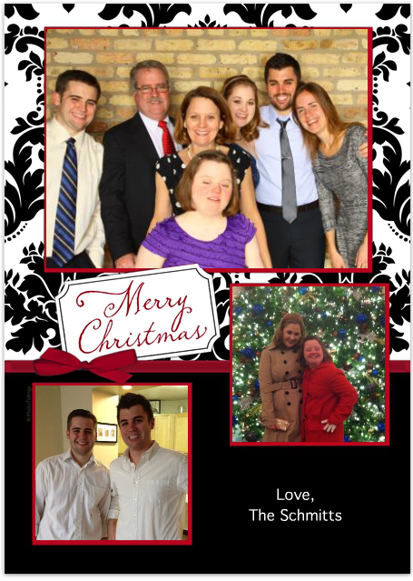

Christmas is by far my favorite holiday and it is one of the most important holidays in my family. We have a multitude of traditions and practices we do every year from the mailing of our Christmas cards to the choice of the family member who “ruined Christmas.” I hope you enjoy looking through and seeing how we celebrate! Merry Christmas and I hope your day is better than Santa Clark's (my brother and his fiancée insist on dressing their poor dog like Santa)
